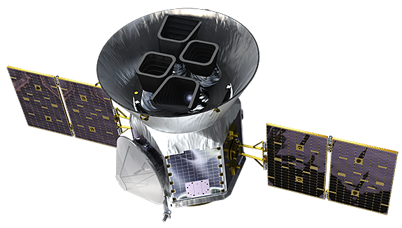

This tool allows users to interactively explore the data collected by TESS and compare the properties of these exoplanets with those of Earth with flexible control levels.
Storyline:
- Scene 1 : Overview of exoplanets discovered by TESS by years. The user can get to the next scene by clicking on a specific planet in the scatter plot.
- Scene 2 : Detailed view of the selected exoplanets characteristics comparing it with earth.
- Scene 3 : Interactive exploration scene where the user can filter or search planets based on their characteristics.